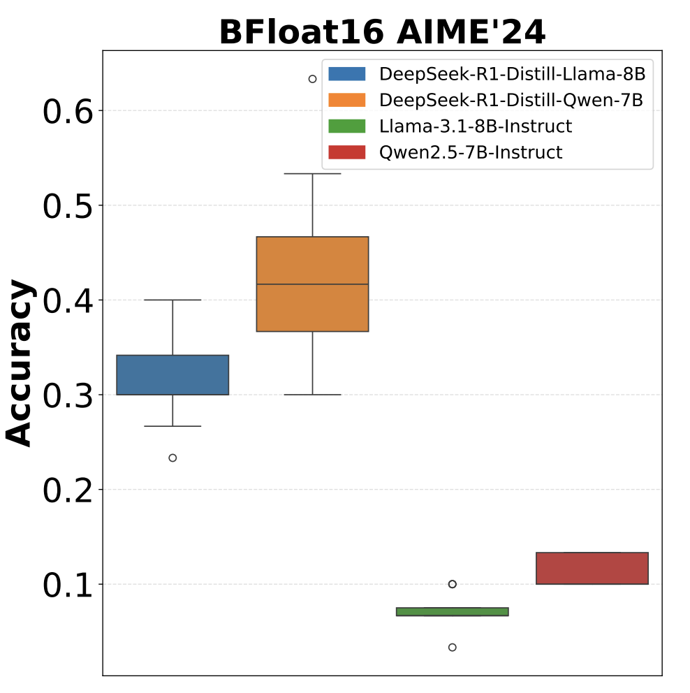
Understanding and Mitigating Numerical Sources of Nondeterminism in LLM Inference NeurIPS Oral
Conference on Neural Information Processing Systems (NeurIPS), 2025
I am a Software Engineer at Google, working on multi-modal generative AI. Previously, I was a Research Scientist at Adobe and Microsoft.
I received my Ph.D. in Electrical and Computer Engineering from Carnegie Mellon University (CMU), advised by Prof. Kris Kitani. During my Ph.D., I interned at Meta Research (twice) and Adobe Research.
I earned my M.Sc. from National Taiwan University (國立台灣大學), advised by Prof. Yu-Chiang Frank Wang at the Vision and Learning Lab, and my B.S. from National Tsing Hua University (國立清華大學).
My research focuses on multi-modal reasoning and visual generation, specifically:
A curated list of representative works. See the full list on Google Scholar.

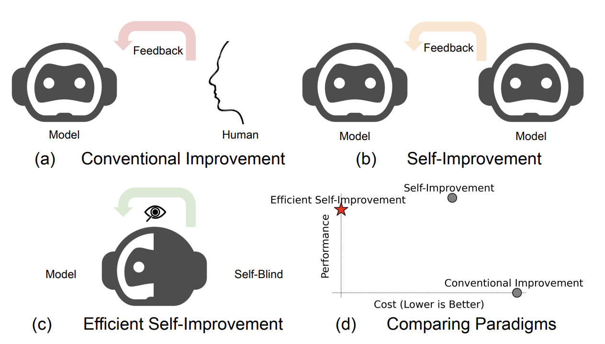
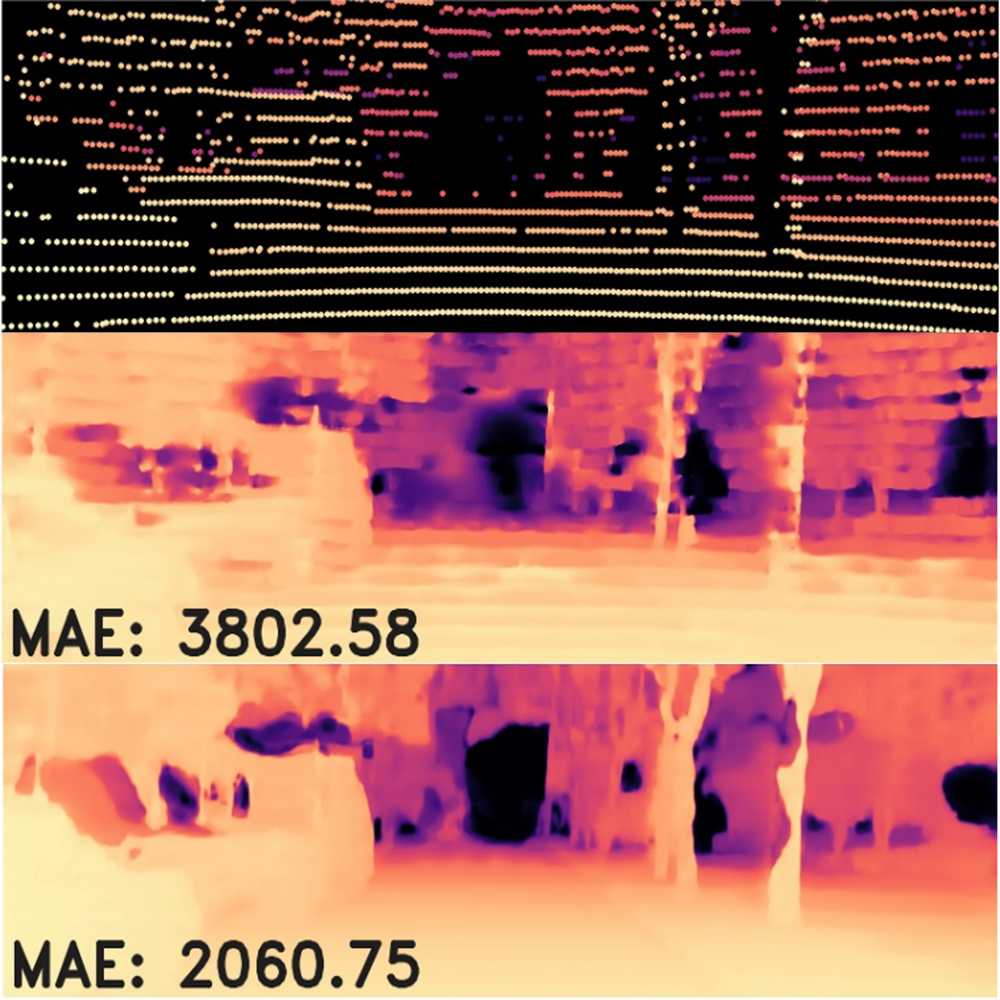
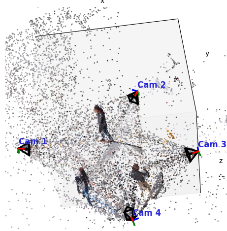
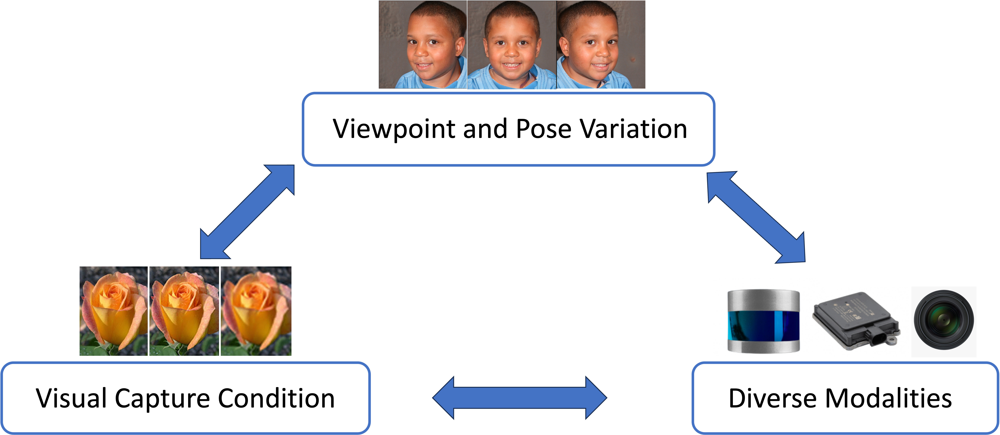
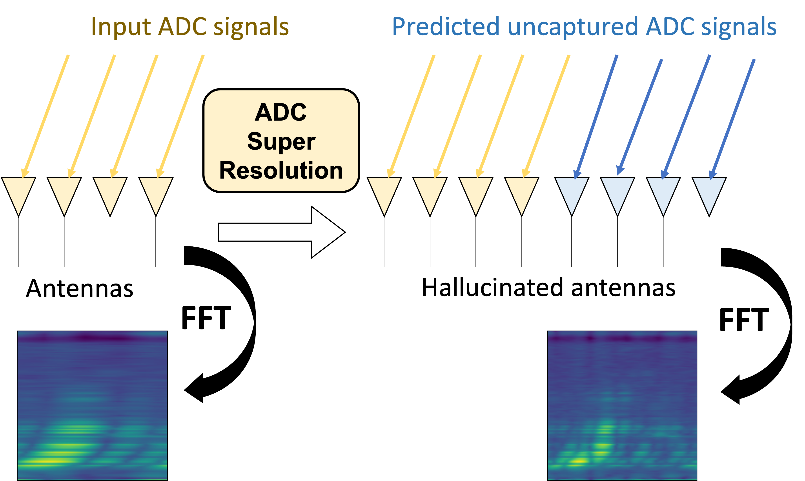


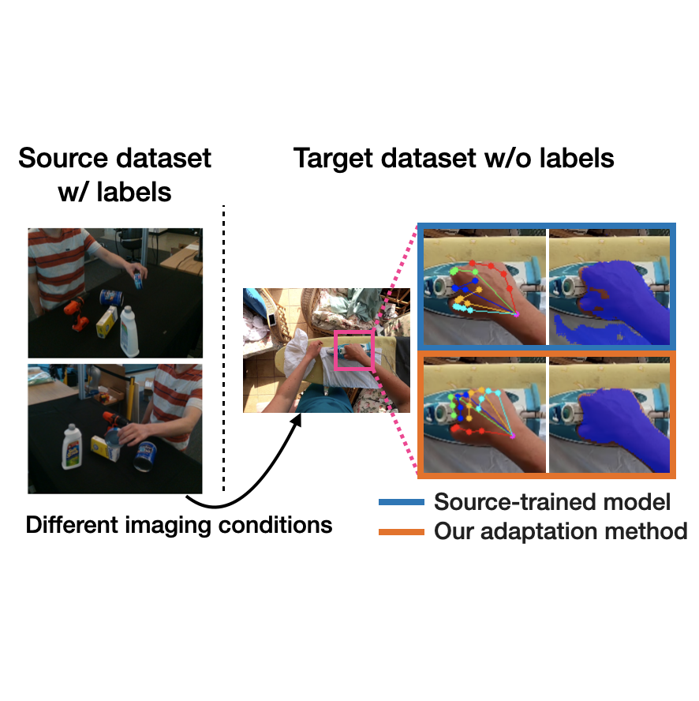
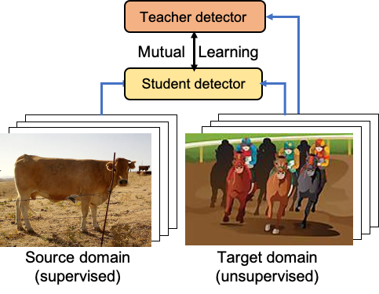
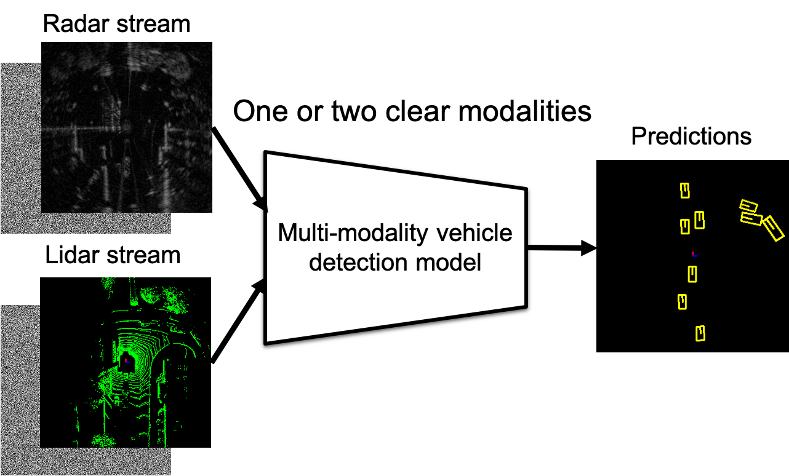
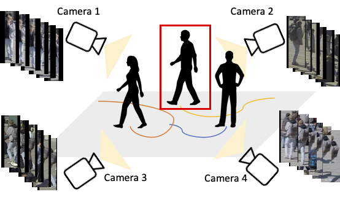
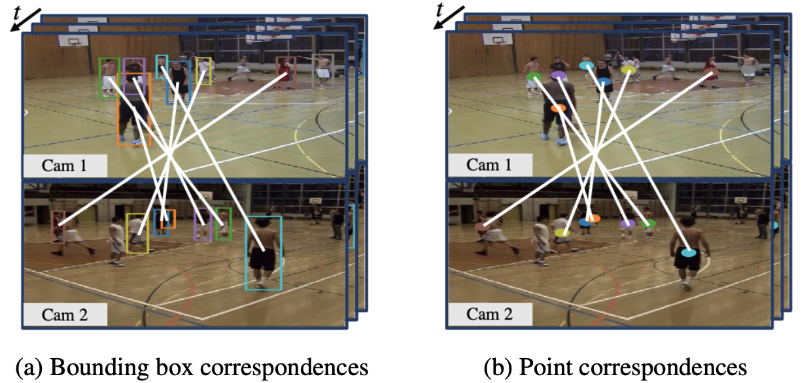
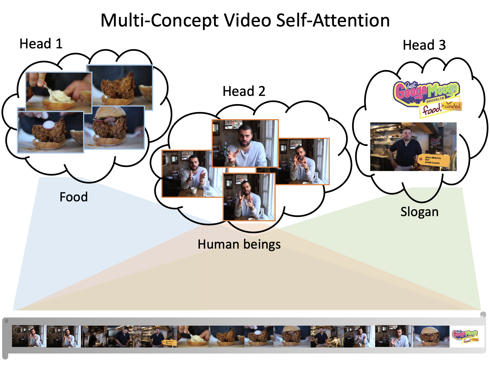
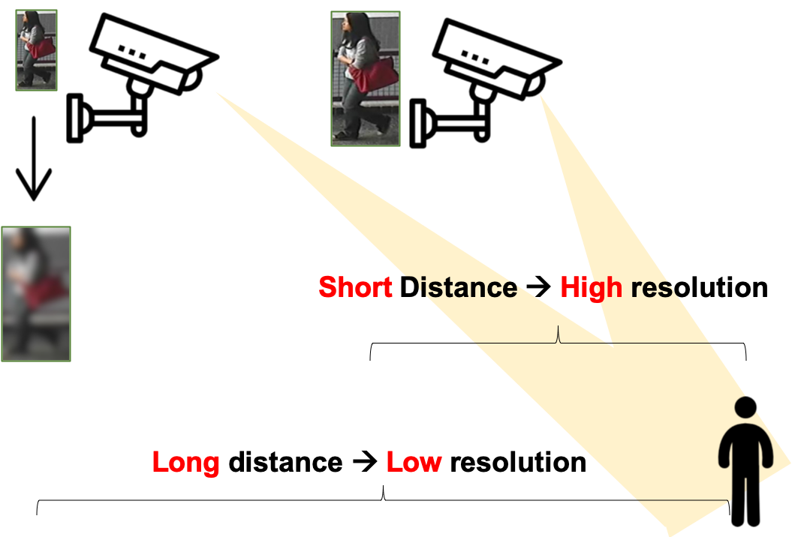
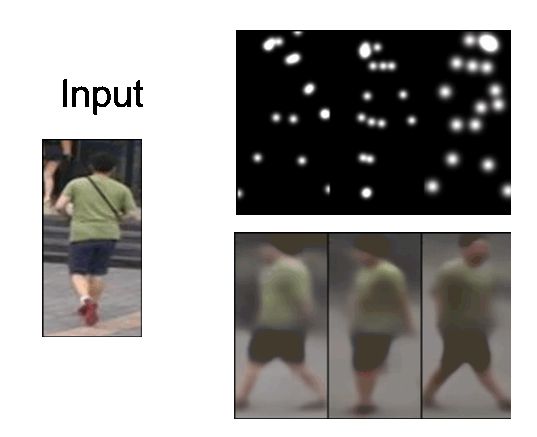
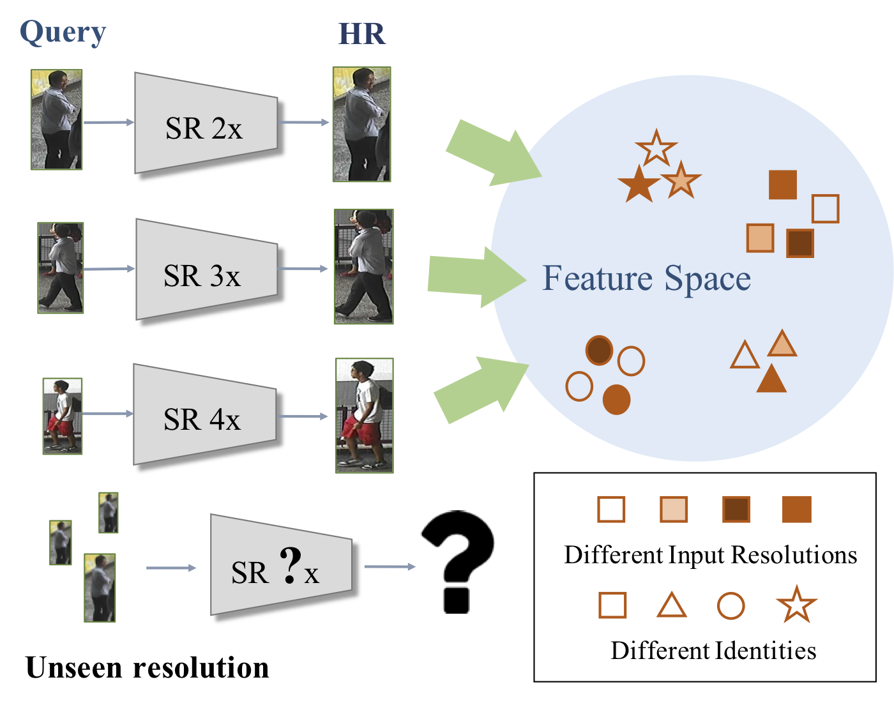
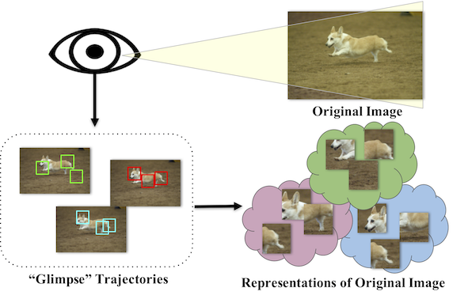
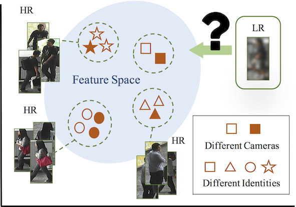
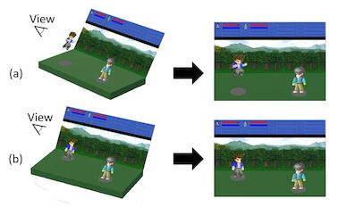
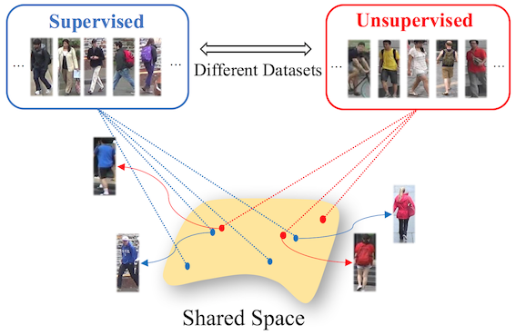